Meestal heb ik enkel deel aan het opeten van eten. Het liefst in grote hoeveelheden.
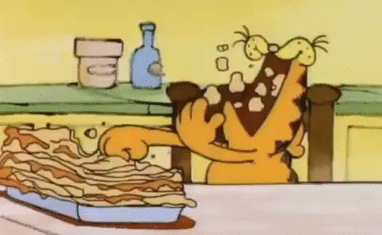
Soms heb ik echter ook deel aan het maken van eten. Dat kan goed gaan;
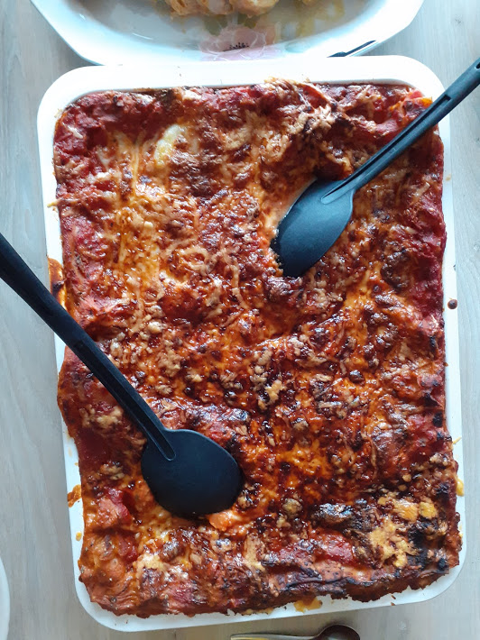 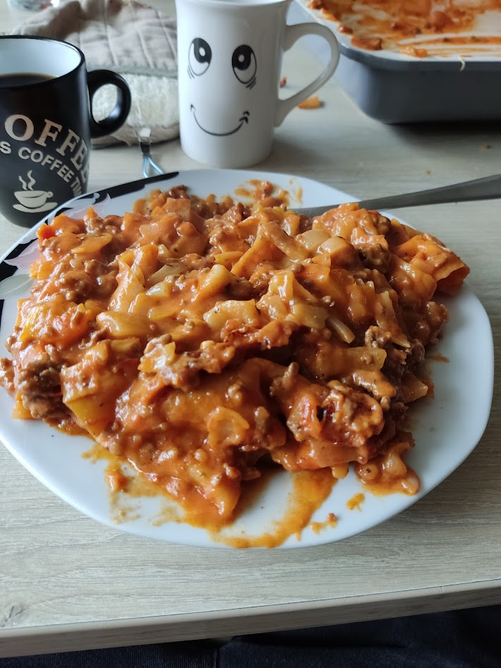
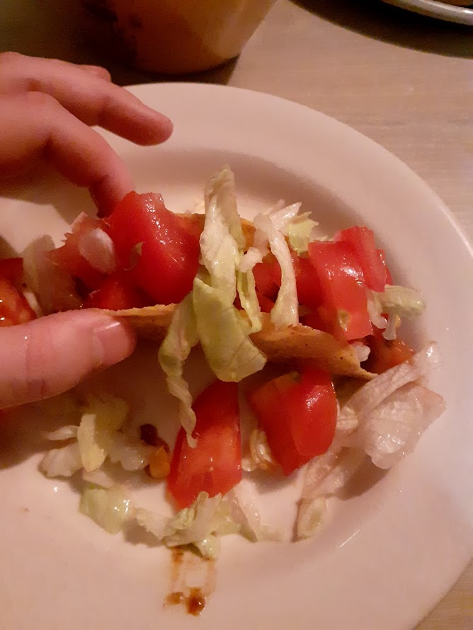
of uh
uuuuuh
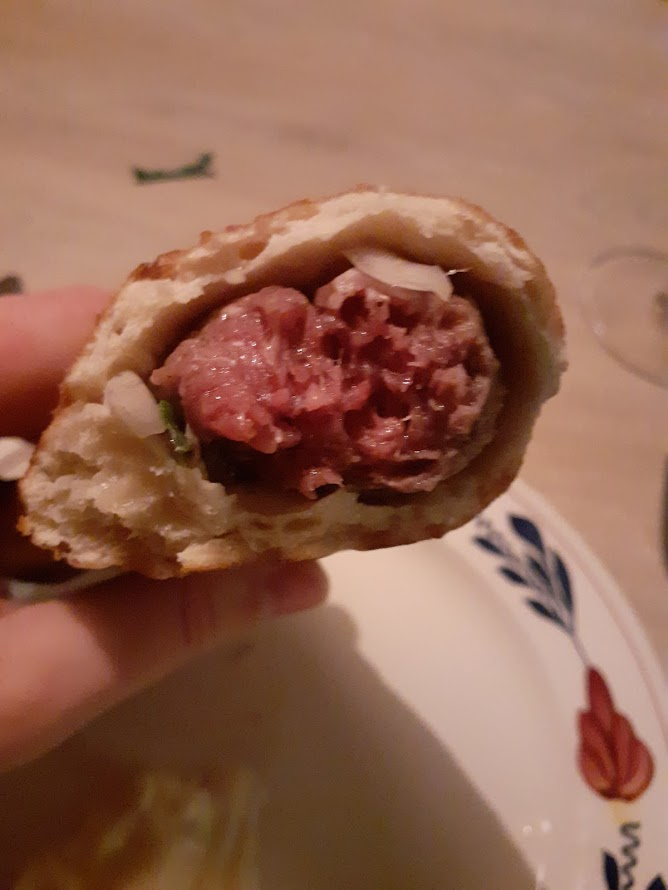

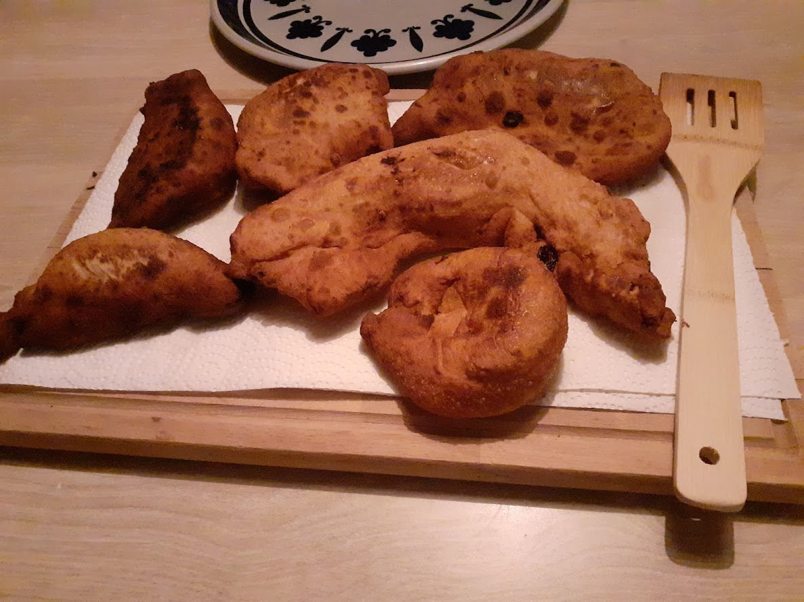 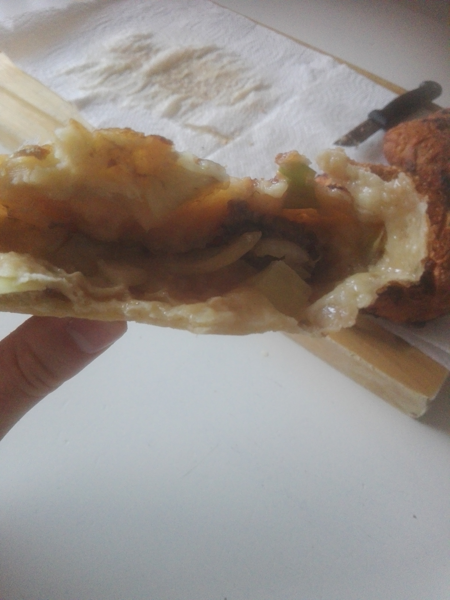

Jjjja, ik ben hier niet bijster goed in.
Eten is ongeveer mijn grootste hobby, daarom heeft het zijn eigen pagina (nee, vraag me niet waarom gamen geen eigen pagina heeft terwijl ik daar bijna meer over kan praten,
ik denk niet goed vooruit en ik ben hier al veel te lang mee bezig).
Meestal heb ik enkel deel aan het opeten van eten. Het liefst in grote hoeveelheden.
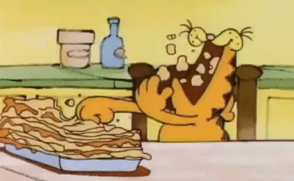
Soms heb ik echter ook deel aan het maken van eten. Dat kan goed gaan;
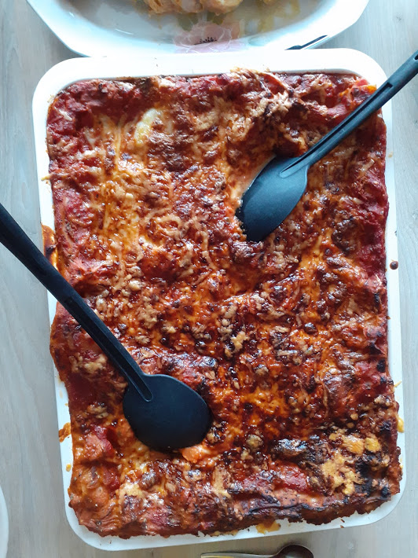
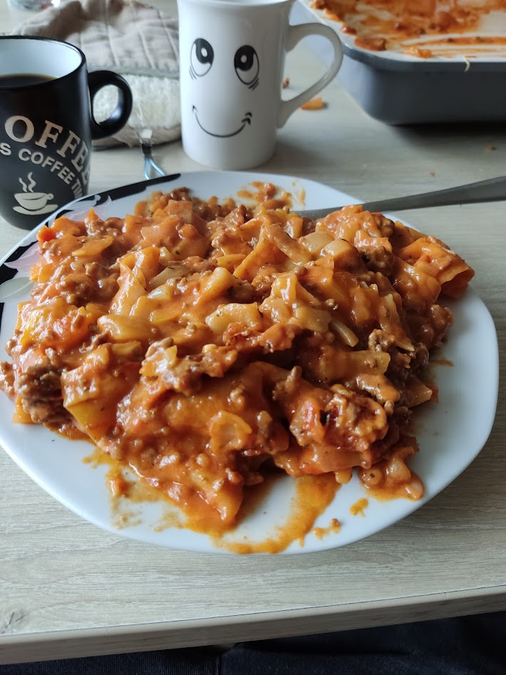
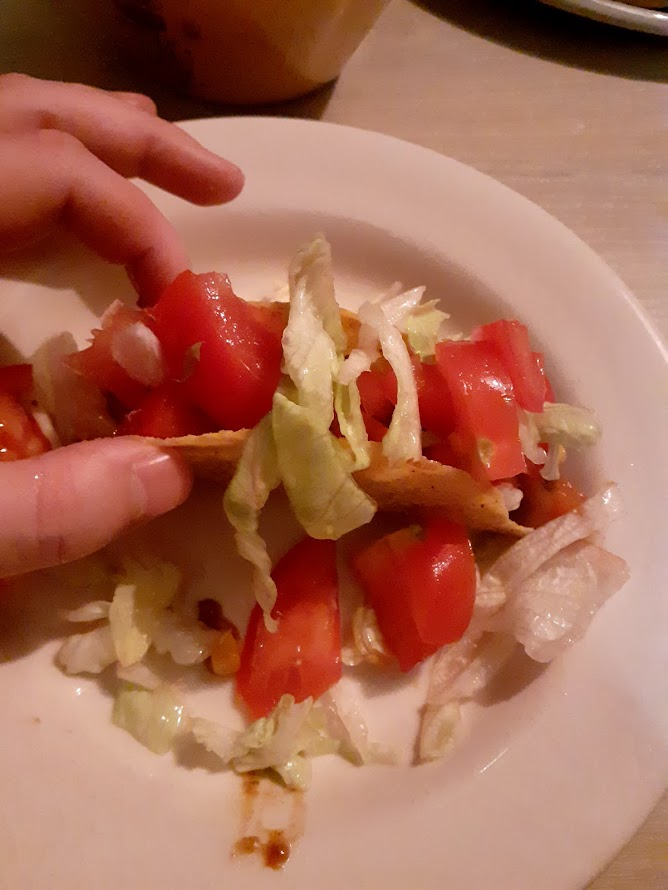
of uh
uuuuuh
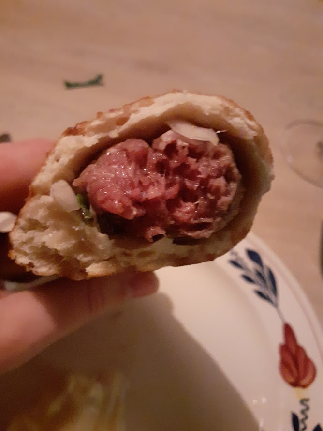
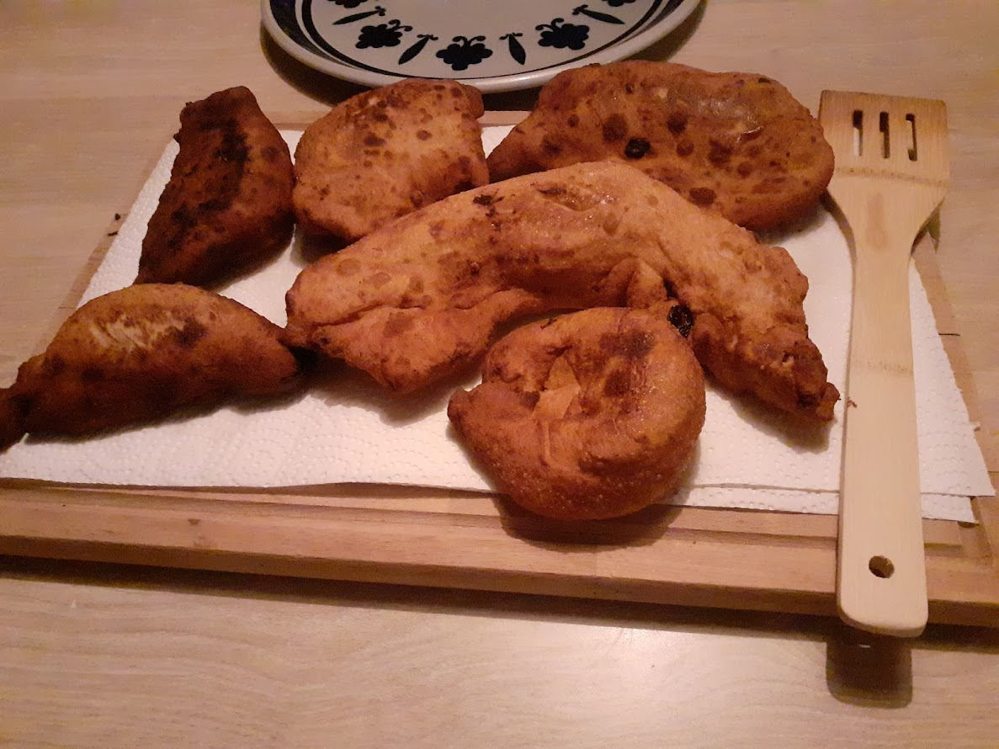
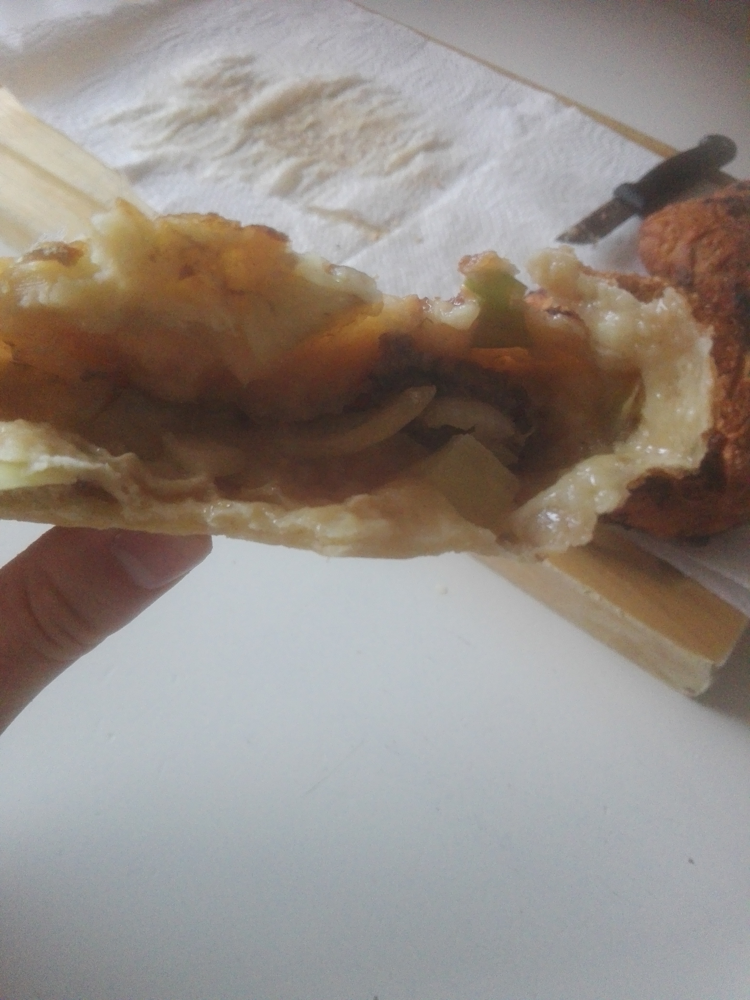
Jjjja, ik ben hier niet bijster goed in.